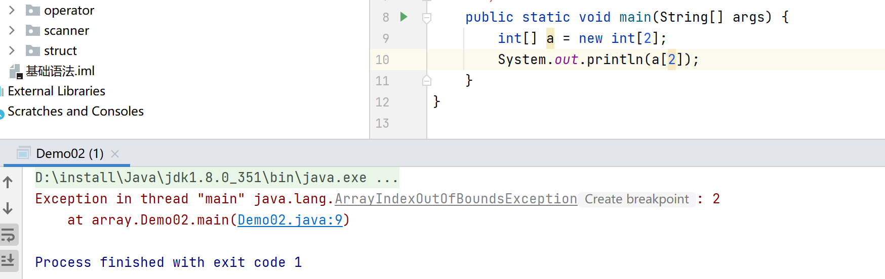

数组的定义
- 数组是相同类型数据的有序集合。
- 数组描述的是相同类型的若千个数据,按照一定的先后次序排列组合而成。
- 其中，每一个数据称作一个数组元素每个数组元素可以通过一个下标来访问它们。
数组声明创建
首先必须声明数组变量，才能在程序中使用数组。下面是声明数组变量的语法：
1 | dataType[] arrayRefVar; //首选的方法 |
Java语言使用new操作符来创建数组，语法如下：
1 | dataType[] arrayRefVar = new dataType[arraySize] |
数组的元素是通过索引访问的，数组索引从0开始。
获取数组的长度
1 | arrays.length |
数组的三种初始化
静态初始化：创建+赋值
1
2int[] a = {1,2,3};
Man[] mans = {new Man(1,1),new Man(2,2)};动态初始化：包含默认初始化（int类型默认null，字符串类型默认null）
1
2int[] b = new int[2];
b[0] = 1;数组的默认初始化
数组是引用类型，它的元素相当于类的实例变量，因此数组一经分配空间，其中的每个元素也被按照实例变量同样的方式被隐式初始化。
数组的四个基本特点
- 其长度是确定的。数组一旦被创建，它的大小就是不可以改变的。
- 其元素必须是相同类型,不允许出现混合类型。
- 数组中的元素可以是任何数据类型，包括基本类型和引用类型。
- 数组变量属引用类型，数组也可以看成是对象，数组中的每个元素相当于该对象的成员变量。数组本身就是对象，Java中对象是在堆中的，因此数组无论保存原始类型还是其他对象类型，数组对象本身是在堆中的。
数组边界
下标的合法区间为[0，length-1]，如果越界就会报错。
报错：java.lang.ArrayIndexOutOfBoundsException（数组下标越界）
1 | public static void main(String[] args) { |

小结
- 数组是相同数据类型(数据类型可以为任意类型)的有序集合
- 数组也是对象。数组元素相当于对象的成员变量。
- 数组长度的确定的，不可变的。如果越界，则报:ArraylndexOutofBounds